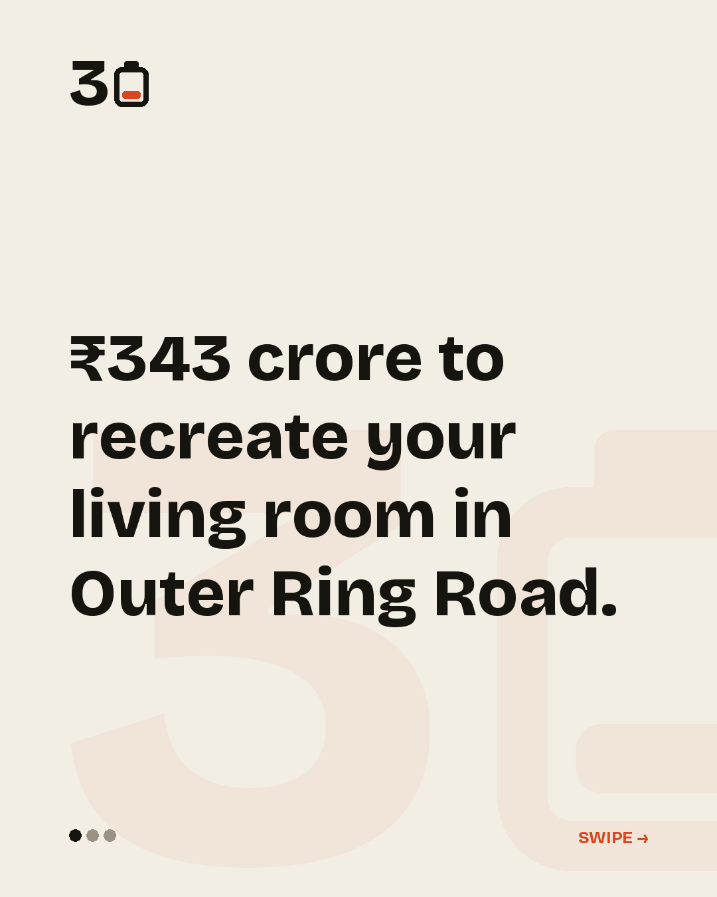
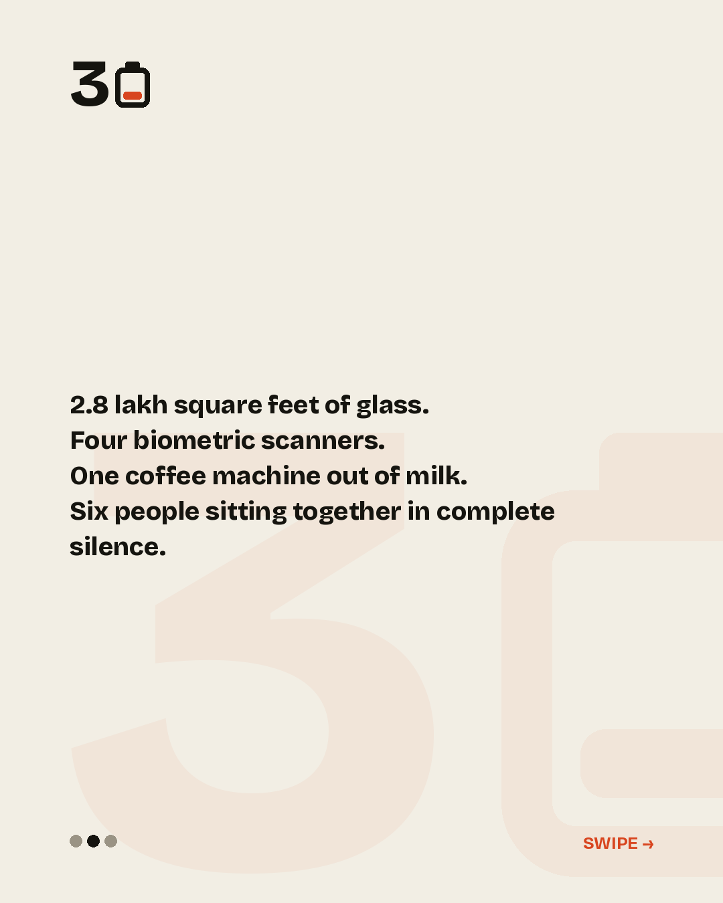
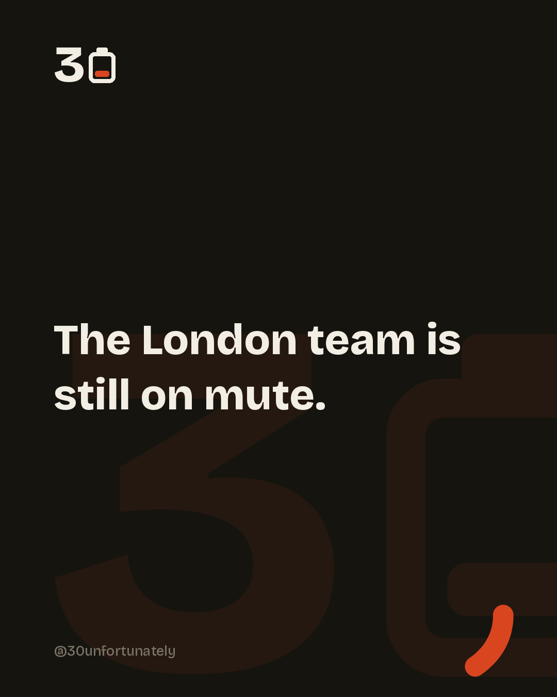
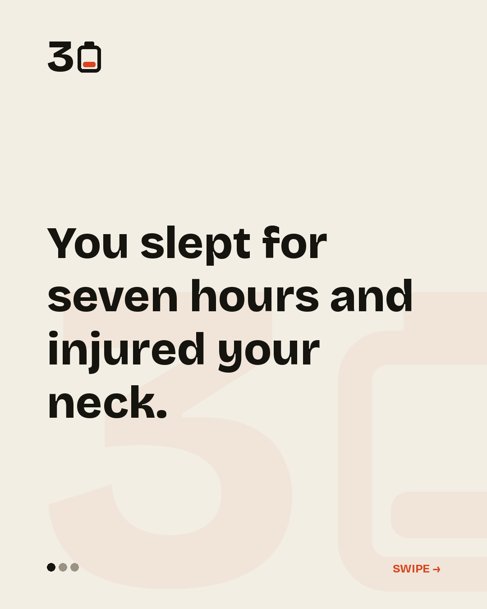
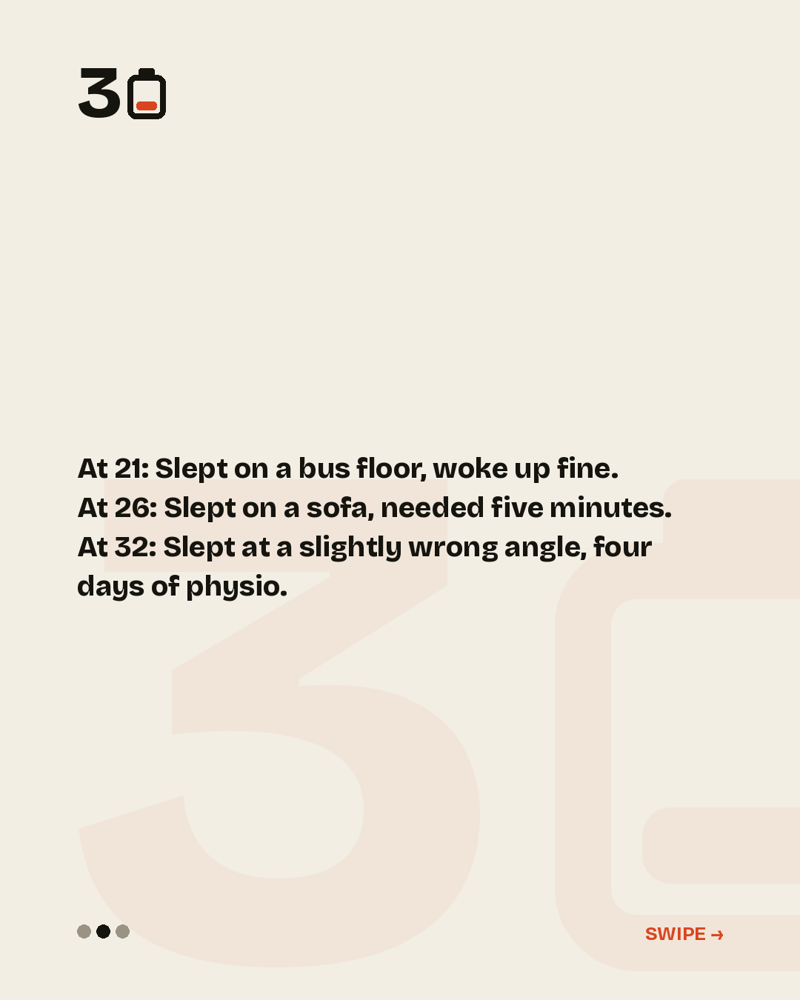
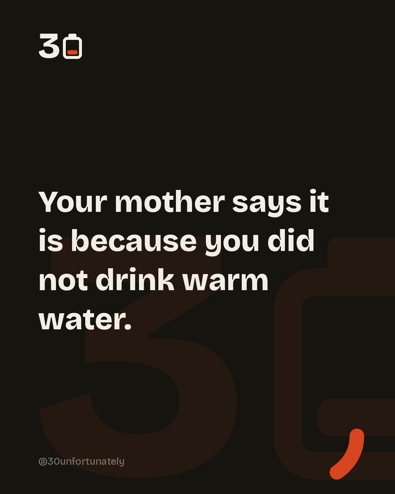

@30unfortunately · 9 waiting · a button files a one-tap issue and the workflow does the rest
2,148 total reach people, all time
2,961 total views 1.4 per person reached
13 median first-day reach +6 vs 7 before
0.1 sends per post 8 in total
84 published 9 queued
122 best post g011, a reel
Day 40 · started 17 September 2026 · 84 published, 2.1 a day
Metrics pulled 27 Oct 09:22 UTC, just now
Reach and views, running total 0 2,500 5,000 p001 · 54 views g001 · 101 views g003 · 156 views g004 · 177 views g005 · 218 views g007 · 285 views g008 · 319 views g006 · 344 views g009 · 386 views g010 · 419 views g011 · 554 views g012 · 577 views g013 · 624 views g023 · 667 views g016 · 681 views g026 · 698 views g020 · 712 views g030 · 733 views g021 · 777 views g025 · 787 views g029 · 817 views g027 · 831 views g032 · 841 views g033 · 857 views g035 · 899 views g036 · 1,070 views g038 · 1,097 views g039 · 1,121 views g040 · 1,133 views g041 · 1,154 views g043 · 1,165 views g049 · 1,176 views g044 · 1,193 views g052 · 1,264 views g046 · 1,320 views g047 · 1,376 views g048 · 1,389 views g050 · 1,406 views g053 · 1,419 views g054 · 1,442 views g055 · 1,480 views g056 · 1,501 views g057 · 1,526 views g058 · 1,561 views g059 · 1,690 views g060 · 1,714 views g061 · 1,735 views g062 · 1,750 views g063 · 1,809 views g064 · 1,817 views g065 · 1,947 views g066 · 1,966 views g067 · 1,996 views g068 · 2,060 views g069 · 2,075 views g070 · 2,091 views g071 · 2,133 views g072 · 2,209 views g073 · 2,239 views g074 · 2,268 views g075 · 2,288 views g076 · 2,329 views g077 · 2,380 views g078 · 2,403 views g079 · 2,429 views g080 · 2,453 views g081 · 2,473 views g082 · 2,479 views g083 · 2,509 views g084 · 2,632 views g085 · 2,646 views g086 · 2,778 views g087 · 2,800 views g088 · 2,823 views g089 · 2,836 views g090 · 2,845 views g091 · 2,853 views g092 · 2,868 views g093 · 2,884 views g094 · 2,905 views g095 · 2,917 views g096 · 2,940 views g097 · 2,957 views g098 · 2,961 views 2,961 views p001 · 19 reach g001 · 40 reach g003 · 63 reach g004 · 73 reach g005 · 105 reach g007 · 156 reach g008 · 170 reach g006 · 178 reach g009 · 187 reach g010 · 196 reach g011 · 326 reach g012 · 335 reach g013 · 379 reach g023 · 418 reach g016 · 429 reach g026 · 436 reach g020 · 443 reach g030 · 450 reach g021 · 482 reach g025 · 491 reach g029 · 499 reach g027 · 504 reach g032 · 510 reach g033 · 517 reach g035 · 553 reach g036 · 707 reach g038 · 726 reach g039 · 734 reach g040 · 742 reach g041 · 750 reach g043 · 758 reach g049 · 762 reach g044 · 767 reach g052 · 826 reach g046 · 869 reach g047 · 913 reach g048 · 917 reach g050 · 922 reach g053 · 926 reach g054 · 943 reach g055 · 976 reach g056 · 993 reach g057 · 1,013 reach g058 · 1,044 reach g059 · 1,155 reach g060 · 1,175 reach g061 · 1,193 reach g062 · 1,198 reach g063 · 1,253 reach g064 · 1,258 reach g065 · 1,366 reach g066 · 1,378 reach g067 · 1,401 reach g068 · 1,448 reach g069 · 1,458 reach g070 · 1,470 reach g071 · 1,508 reach g072 · 1,571 reach g073 · 1,593 reach g074 · 1,617 reach g075 · 1,623 reach g076 · 1,654 reach g077 · 1,696 reach g078 · 1,712 reach g079 · 1,737 reach g080 · 1,756 reach g081 · 1,771 reach g082 · 1,776 reach g083 · 1,800 reach g084 · 1,905 reach g085 · 1,914 reach g086 · 2,021 reach g087 · 2,039 reach g088 · 2,057 reach g089 · 2,065 reach g090 · 2,072 reach g091 · 2,079 reach g092 · 2,086 reach g093 · 2,099 reach g094 · 2,105 reach g095 · 2,116 reach g096 · 2,132 reach g097 · 2,145 reach g098 · 2,148 reach 2,148 reach 2026-09-17 → 2026-10-27
Which format travels Reels reach 3.0× further than carousels.
Likes run at 26.8% of reach on carousels against 6.5% on reels, and 1 posts have been saved.
Weekly average reach, by format tallest 50
Per post 83 posts have a first-day number. Best g011 reached 122, worst g044 reached 3, median 13.
How long reels are watched Reels are watched 4.0s on average (median 3.5s). Correlation with reach is -0.15 — the reels watched longest reached fewest, because average watch time is per play and a cold audience swipes. Not a target yet.
Today’s candidates Nothing generated today. The last run was 25 Oct — see it →
Only posts you can still stop or push. 110 already published, skipped or unused are not listed — their numbers are in the charts above, and `publish.py posts` prints them one by one. These files are what Meta pulls at publish time.
g107 · terms_and_conditions · satire 4
g106 · then_now · satire 4
g105 · escalating_list · satire 3
g104 · job_description · satire 3 · hinglish



g103 · juxtaposition · satire 4



g102 · then_now · satire 3 · hinglish
g101 · terms_and_conditions · satire 4
g100 · dialogue · satire 3 · hinglish
g099 · list_collapse · satire 3 · hinglish